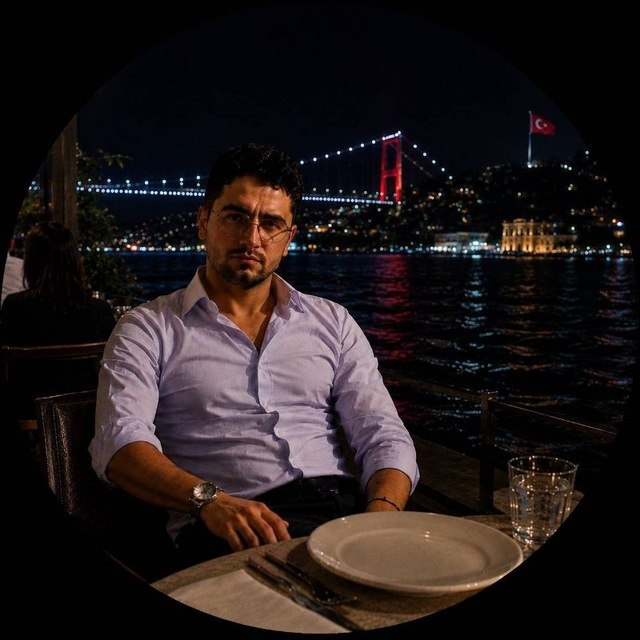

about
I am an Electrical Engineering student at Sajjad University, with a profound passion for artificial intelligence, robotics, and intelligent systems. My technical journey is driven by a commitment to solving complex, real-world problems through the integration of engineering principles and advanced programming.
Currently, I am engaged in a project focused on heavy-vehicle tanker systems, where I apply my engineering knowledge to develop practical and efficient solutions. My primary goal is to specialize in AI and robotics design, contributing to the next generation of intelligent technologies.
Beyond my scientific and technical pursuits, I bring with me a decade of experience in the martial arts—including Hapkido, Aikijutsu, and Taekwondo—grounded in discipline, focus, and leadership skills. As an official international instructor and referee, I have cultivated a high level of resilience and precision—qualities I integrate into my technical work and problem-solving approach. I am also a gold medalist in the World Self-Defense Championships in Japan and hold a 3rd-degree black belt in martial arts.
I am a lifelong learner, currently refining my language skills to facilitate my international academic and professional journey. I am dedicated to building technology that is not only functional but also intelligent and human-centered.
\
skills
| Engineering : | Electrical Engineering, Automotive Electrical Systems, Circuit Design. |
| Programming : | Programming Fundamentals, Problem Solving, [English]. |
| Programming tools : | html |
| Languages : | English (Professional Working Proficiency). |
| Interpersonal : | Analytical Thinking, Continuous Learning, Adaptability. |
| Sports Achievements: | Black Belt (1st Dan) in Hapkido and Taekwondo 4th Dan in Aikijutsu 3rd Dan in World Martial Arts |
Experiences
- in Electrical Engineering | Sajjad University (Starting 2025) Work Experience
- Automotive Electrical Specialist | 2021 – 2025 Gained 4 years of hands-on experience in automotive electrical systems and services
- English: Continuous learner since age 16 (Intermediate/Advanced - A1) Technical: Automotive Electrical Systems, Electrical Engineering principles.